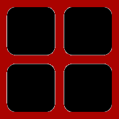

Projetos
Portal do Aluno
Disciplinas e Projetos
Teórico
Projeto Final de Desconstruindo a Matéria
Projeto Final de Matemática da Variação
Projeto Final de Matemática Multivariada
Projeto Final de Modelagem e Simulação
Prático
Estação Metereológica
Girafa do Job Rotation
Projeto Final de Acionamentos Elétricos
Projeto Final de Design de Software
Projeto Final de Modelagem e Controle
Interação com o Usuário
Melhoria para carroça de catadores
Projeto Final de Ciência dos Dados
Projeto Final de Co-Design de Aplicativos
Economia
Cases de Grandes Desafios da Engenharia
Inovação empresarial para empresa existente
Modelo de negócio para startup nova
Contato
(11) XXXX-XXXX
insper@insper.edu.br